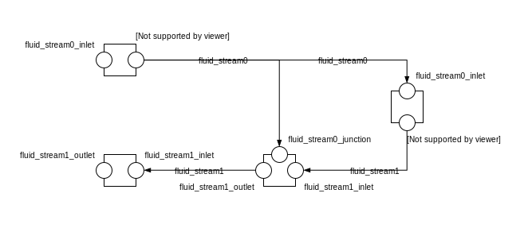
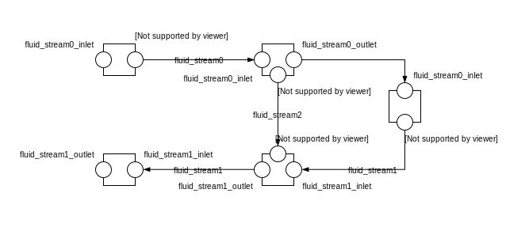

Diagram view
When drawing a connection line between two connector icons:
a connect equation with the references to the two connectors is created,
with a graphical annotation defining the connection path as an array of points and providing an optional smoothing function e.g. Bezier.
When no smoothing function is specified the connection path must be rendered graphically as a set of segments.
The array of points is either:
created fully automatically when the next user’s click after having started a connection is made on a connector icon. The function call create_new_path(connector1, connector2) creates the minimum number of vertical or horizontal segments to link the two connector icons with the constraint of avoiding overlaying any instantiated object,
created semi automatically based on the input points corresponding to the user clicks outside any connector icon: the function call create_new_path(point[i], point[i+1]) is called to generate the path linking each pair of points together.
Natural mapping for a model with two fluid ports (most common case):
Modelica.Fluid.Interfaces.FluidPort_a: inletModelica.Fluid.Interfaces.FluidPort_b: outletFor more than two fluid ports e.g. coil we could use the variable name:
Modelica.Fluid.Interfaces.FluidPort_a port_a1: primary fluid (liquid) inletModelica.Fluid.Interfaces.FluidPort_a port_a2: secondary fluid (air) inletHowever that logic fails when the ports correspond to the same medium:
Buildings.Fluid.Actuators.Dampers.MixingBox: port_Out, port_Exh, port_Ret, port_SupBuildings.Fluid.Actuators.Valves.ThreeWayEqualPercentageLinear: port_1, port_2, port_3 where port_3 is neither inlet nor outlet but rather a fluid junctionBuildings.Fluid.HeatExchangers.PlateHeatExchangerEffectivenessNTU: port_a1, port_a2, port_b1, port_b2For the configuration script:
By default port_a and port_b will be tagged as inlet and outlet respectively.
An optional tag is provided at the instance level to specify the main fluid stream e.g. air_supply or air_return.
All fluid connectors are then tagged by concatenating the previous tags e.g. air_supply_inlet or air_return_outlet.
We need an additional mechanism to allow tagging each fluid port individually. Typically for a three way valve (see figure), the bypass port should be on a different fluid stream than the inlet and outlet ports. Indeed, to model a valve mounted on the return pipe, the bypass port should be connected to the liquid inlet port of the coil (inside connector) and the liquid supply port (outside connector). Hence we need a mapping dictionary at the connector level which, if provided, takes precedence on the default logic specified above.
{"port_1": "hotwater_return_inlet", "port_2": "hotwater_return_outlet", "port_3": "hotwater_supply_junction"}The conversion script throws an exception if the instantiated class has some fluid ports that cannot be tagged with the previous logic e.g. non default names and no mapping dictionary provided.
If the tagging is resolved for all fluid connectors of the instantiated objects the connector tags are stored in a hierarchical vendor annotation at the model level e.g. __Linkage_connect(Tags(object_name1={connector_name1=air_supply_inlet, connector_name2=air_supply_outlet, ...}, ...)). This is done when updating the model.
All object names in __Linkage_tags(Tags()) annotation reference instantiated objects with fluid ports that have to be connected to each other. To build the full connection set, two additional inputs are needed:
The names of the start port and the end port for each fluid stream. Note that those ports may be part of a different fluid stream see figure.
The direction (horizontal or vertical) of the connection path.
Those are stored in __Linkage_connect(Direction(fluid_stream1={start_connector_name, end_connector_name, horizontal_or_vertical})).
The connection logic is then as follows:
List all the different fluid streams in __Linkage_connect(Tags()) corresponding to each tuple {fluid}_{stream} in all the connector tags {fluid}_{stream}_{port}.
For each fluid stream:
Find the position of the objects corresponding to the start and end ports specified in __Linkage_connect(Direction(fluid_stream1={start_connector_name, end_connector_name})). Those are further referred to as start and end position.
Find the orientation (up, down, right, left) of the direction (horizontal, vertical) of the connection path by comparing the x (resp. y) coordinate values of the start and end position if the direction is horizontal (resp. vertical). Throw an exception if the orientation cannot be resolved due to identical coordinate values.
Order all the connectors belonging to that fluid stream based on the position of the corresponding objects, the orientation defined here above and inlet being listed before outlet and junction. Throw an exception if the coordinate values are not strictly increasing.
Generate the connect equations by iterating on the ordered list of connectors as illustrated in the pseudo code below. And generate the connection path and the corresponding graphical annotation :
connect(start_connector_name, ordered_connector[1])
annotation(Line(points=create_new_path(start_connector_name, ordered_connector[1])))
i = 1
i_end = i + 1
while i_end <= n
if type(ordered_connector[i]) != "junction"
i_start = i+1
i_end = i_start + 1
i = i_end + 1
else
i_start = i
i_end = i_start + 1
i = i_end
connect(ordered_connector[i_start], ordered_connector[i_end])
annotation(Line(points=create_new_path(ordered_connector[i_start], ordered_connector[i_end])))
connect(ordered_connector[n], end_connector_name)Note: The logic could be simplified by using Buildings.Fluid.FixedResistances.Junction to explictly model each fluid junction and restricting the connector types to inlet and outlet. However that would make the initial template definition more complex see figure.
Generate the connection path and the corresponding graphical annotation by the function call create_new_path(connector1, connector2).
 Generating connections with a fluid junction not modeled explicitly (typically a three way valve)
 Generating connections with a fluid junction modeled explicitly (typically a three way valve)
The implications of that logic are the following:
Within the same fluid stream objects are connected in a given direction and orientation: to represent a fluid loop (graphically) at least two fluid streams must be defined, typically supply and return.
A same fluid stream does not necessarily implies a uniform flow rate nor temperature.
Exemple of AHU (VAV or DOA)
{
"script": "path of script.js",
"system": {
"description": "System type",
"value": "AHU"
},
"icon": "path of icon.mo",
"diagram": {
"configuration": [],
"modelica": [[-120,-200], [120,120]],
"name": {
"description": "Model name",
"widget": "Text", // see https://ipywidgets.readthedocs.io/en/latest/examples/Widget%20List.html
"value": "AHU_#i" // #i minimum available positive integer
},
"type": {
"description": "Type of AHU",
"widget": "Dropdown",
"options": ["VAV", "DOA"]
},
"equipment": [ // Brick relationship: hasPart
{
"id": "heat_recovery",
"description": "Heat recovery",
"widget": "Dropdown",
"condition": [ // array of conditions for enabling/displaying this object
{"#type": "DOA"}
],
"options": ["None", "Coils", "Fixed plate", "Enthalpy wheel", "Sensible wheel"],
"model": [
"Buildings.Fluid.HeatExchangers.PlateHeatExchangerEffectivenessNTU",
],
"tag": "heaRec",
"value": "None",
"icon_transformation": null,
"placement": [12, 9],
},
{
"id": "economizer",
"description": "Economizer",
"widget": "Checkbox",
"value": "False",
"condition": [ // array of conditions for enabling/displaying this object
{"#type": "VAV"}
],
"model": "Buildings.Fluid.Actuators.Dampers.MixingBox",
"tag": "eco",
"icon_transformation": null,
"placement": [12, 6],
},
{
"description": "Supply fan",
"widget": "Dropdown",
"options": ["None", "Draw through", "Blow through"],
"value": "Draw through",
"model": "Buildings.Fluid.Movers.SpeedControlled_y", // array or array of arrays
"tag": "supFan",
"icon_transformation": null,
"placement": [null, [16, 11], [16, 18]], // single coordinate array or array of coordinates arrays with size len(options),
},
{
"description": "Return/Relief fan",
"widget": "Dropdown",
"options": ["None", "Return", "Relief"],
"value": "Relief",
"model": "Buildings.Fluid.Movers.SpeedControlled_y", // array or array of arrays
"tag": "retFan",
"icon_transformation": null,
"placement": [null, [16, 11], [16, 18]], // single coordinate array or array of coordinates arrays with size len(options),
},
],
"controls": [
{
"description": "Economizer",
"widget": "Dropdown",
"condition": [ // array of conditions for enabling/displaying this object
{"#equipmen[id=economizer].value": "True"}
],
"options": ["ASHRAE 2006", "ASHRAE G36"],
},
],
"parameters": [
{
"name": "v_flowSup_nominal",
"description": "Nominal supply air volumetric flow rate",
}
],
}Issues:
We have a linked modelica model residing on disk. When loading that model, LinkageJS must be able to:
identify which object and connect statement can be modified with the template script: declaration/statement annotation __linkage_modify=true
generate the JSON configuration file:
automatically from the model structure? Non working examples:
Placement we have no one-to-one correspondance with JSON file. Also relying on the connect statements involving the object seems to complex.Notes:
Divers:
Questions:
Choice of units: SI / IP
Text editor
Launch simulation integrated
Visualize results: variable browser (with Brick/Haystack option similar as re option)
No icon layer: just diagram layer showing graphical objects, component icons, connectors and connection lines
Automatic medium propagation between connected components
Modelica standard graphical annotations part of specifications
Set up parameters values like OS measures enable cf. electrical loads…
From Taylor Eng.
For standard systems, it might be possible to simply include in their specifications a table of ASHRAE Guideline 36 sequences with check boxes for the paragraph numbers that are applicable to their project.